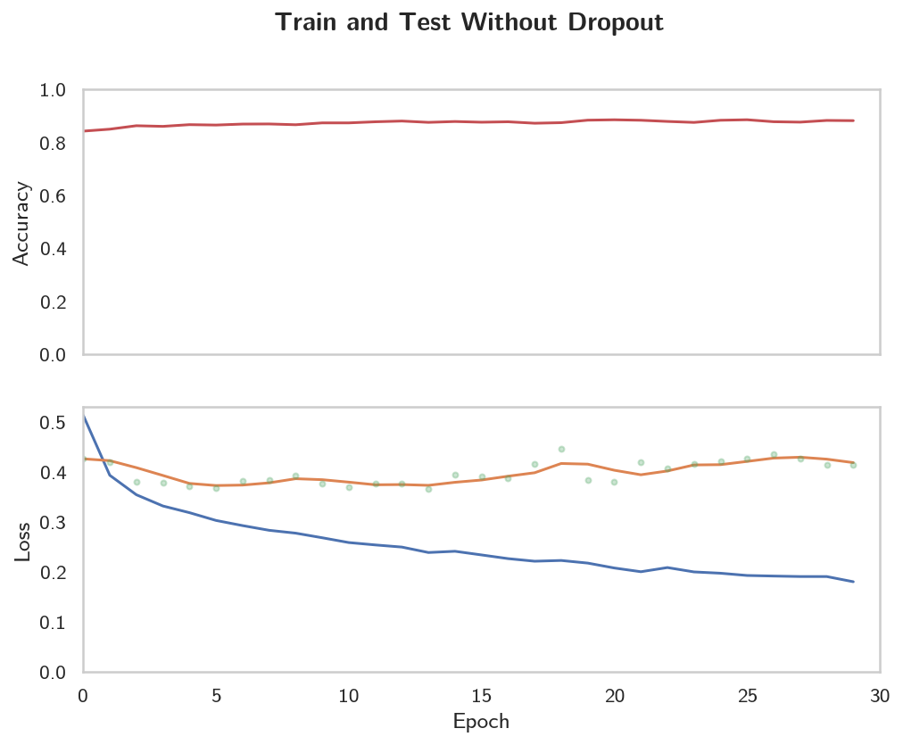
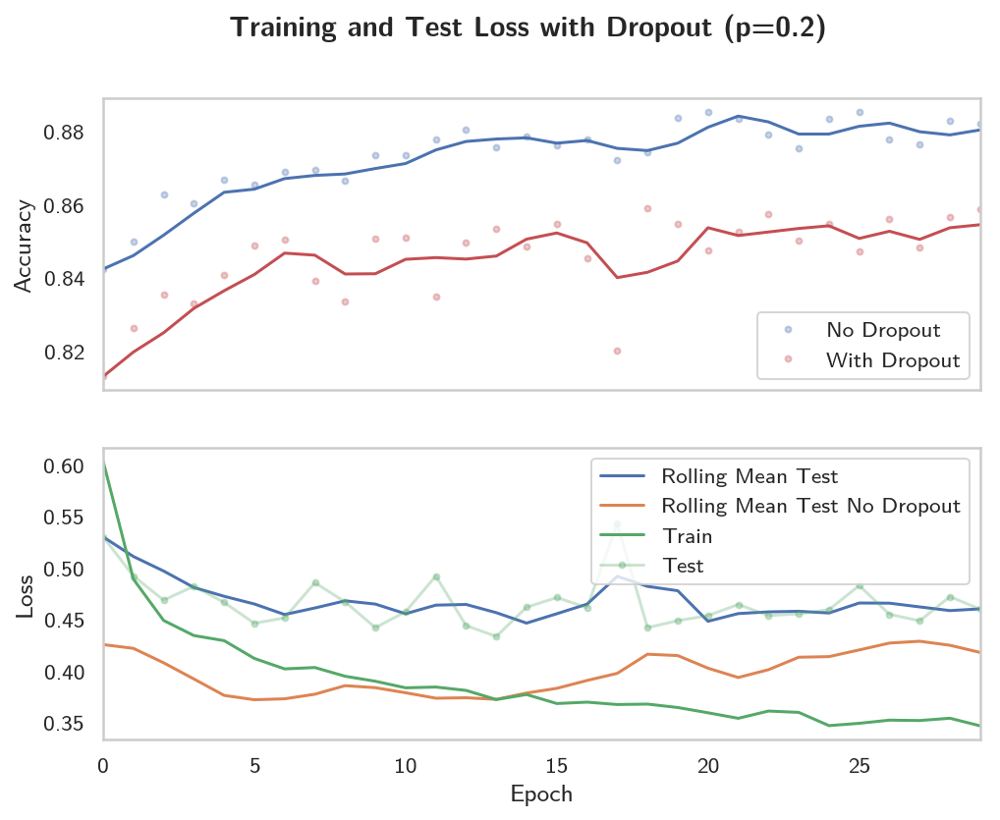
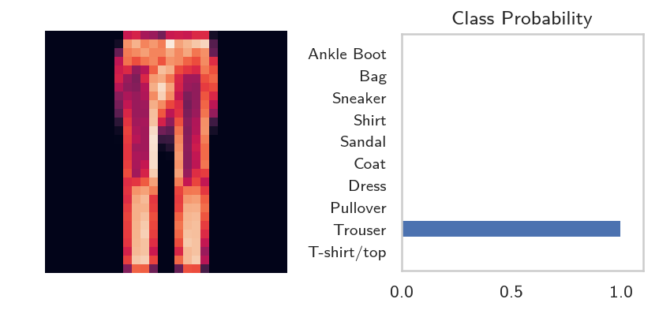

Part 5 - Inference and Validation
Table of Contents
Introduction
This is from Udacity's Deep Learning Repository which supports their Deep Learning Nanodegree.
Now that you have a trained network, you can use it for making predictions. This is typically called inference, a term borrowed from statistics. However, neural networks have a tendency to perform too well on the training data and aren't able to generalize to data that hasn't been seen before. This is called overfitting and it impairs inference performance. To test for overfitting while training, we measure the performance on data not in the training set called the validation set. We avoid overfitting through regularization such as dropout while monitoring the validation performance during training.
Setup
Imports
Python
import os
PyPi
from dotenv import load_dotenv
from torch import nn, optim
from torchvision import datasets, transforms
import matplotlib.pyplot as pyplot
import pandas
import seaborn
import torch.nn.functional as F
import torch
The Nano Degree Repo
from nano.pytorch import helper
This Project
from fashion import label_decoder
Plotting
get_python().run_line_magic('matplotlib', 'inline')
get_python().run_line_magic('config', "InlineBackend.figure_format = 'retina'")
seaborn.set(style="whitegrid",
rc={"axes.grid": False,
"font.family": ["sans-serif"],
"font.sans-serif": ["Latin Modern Sans", "Lato"],
"figure.figsize": (8, 6)},
font_scale=1)
The Environment
load_dotenv()
DATA_PATH = os.environ.get("FASHION_MNIST")
print(DATA_PATH)
~/datasets/F_MNIST/
The Data
We're going to load the dataset through torchvision but this time we'll be taking advantage of the test set which you can get by setting train=False.
The test set contains images just like the training set. Typically you'll see 10-20% of the original dataset held out for testing and validation with the rest being used for training.
Normalize the Data
means = spread = (0.5, 0.5, 0.5)
transform = transforms.Compose([transforms.ToTensor(),
transforms.Normalize(means, spread)])
Training Data
Once again we're going to use the Fashion MNIST data set.
training_set = datasets.FashionMNIST(DATA_PATH,
download=True,
train=True,
transform=transform)
training_batches = torch.utils.data.DataLoader(training_set,
batch_size=64,
shuffle=True)
Test Data
By setting train=False in the FashionMNIST constructor you implicitly get the test set.
test_set = datasets.FashionMNIST(DATA_PATH,
download=True,
train=False,
transform=transform)
test_batches = torch.utils.data.DataLoader(test_set,
batch_size=64,
shuffle=True)
The Model
We're going to use the object-oriented approach instead of the pipeline that we used earlier. It's going to have three hidden layers and one output layer.
class HyperParameters:
inputs = 28**2
hidden_layer_1 = 256
hidden_layer_2 = 128
hidden_layer_3 = 64
outputs = 10
axis = 1
learning_rate = 0.003
epochs = 30
dropout_probability = 0.2
class Classifier(nn.Module):
def __init__(self):
super().__init__()
self.input_to_hidden = nn.Linear(HyperParameters.inputs,
HyperParameters.hidden_layer_1)
self.hidden_1_to_hidden_2 = nn.Linear(HyperParameters.hidden_layer_1,
HyperParameters.hidden_layer_2)
self.hidden_2_to_hidden_3 = nn.Linear(HyperParameters.hidden_layer_2,
HyperParameters.hidden_layer_3)
self.hidden_3_to_output = nn.Linear(HyperParameters.hidden_layer_3,
HyperParameters.outputs)
def forward(self, x: torch.Tensor) -> torch.Tensor:
"""One forward-pass through the network"""
# make sure input tensor is flattened
x = x.view(x.shape[0], -1)
x = F.relu(self.input_to_hidden(x))
x = F.relu(self.hidden_1_to_hidden_2(x))
x = F.relu(self.hidden_2_to_hidden_3(x))
x = F.log_softmax(self.hidden_3_to_output(x),
dim=HyperParameters.axis)
return x
model = Classifier()
Validation
The goal of validation is to measure the model's performance on data that isn't part of the training set. Performance here is up to the developer to define though. Typically this is just accuracy, the percentage of classes the network predicted correctly. Other options are precision and recall, top-5 error rate, etc.. We'll focus on accuracy here. First we'll do a forward pass with one batch from the test set.
Get the next image-batch.
images, labels = next(iter(test_batches))
Now we'll get the model probabilities for the image-batch.
probabilities = torch.exp(model(images))
shape = probabilities.shape
print(shape)
rows, columns = shape
assert rows == 64
assert columns == 10
torch.Size([64, 10])
With the probabilities, we can get the most likely class using the probabilities.topk method. This returns the \(k\) highest values in the tensor. Since we just want the most likely class, we can use probabilities.topk(1). This returns a tuple of the top-\(k\) values and the top-\(k\) indices. If the highest value is the fifth element, we'll get back 4 as the index.
top_p, top_class = probabilities.topk(1, dim=1)
Look at the most likely classes for the first 10 examples
print(top_class[:10,:])
tensor([[6],
[6],
[6],
[6],
[6],
[6],
[6],
[6],
[5],
[6]])
Now we can check if the predicted classes match the labels. This is simple to do by equating top_class and labels, but we have to be careful of the shapes. Here top_class is a 2D tensor with shape (64, 1) while labels is 1D with shape (64). To get the equality to work out the way we want, top_class and labels must have the same shape.
If we do this:
equals = top_class == labels
equals will have shape (64, 64), try it yourself. What it's doing is comparing the one element in each row of top_class with each element in labels which returns 64 True/False boolean values for each row, so we have to reshape the labels first using the view method.
equals = top_class == labels.view(*top_class.shape)
Now we need to calculate the percentage of correct predictions. equals has binary values, either 0 or 1. This means that if we just sum up all the values and divide by the number of values, we get the percentage of correct predictions. This is the same operation as taking the mean, so we can get the accuracy with a call to torch.mean. If only it was that simple. If you try torch.mean(equals), you'll get an error.
RuntimeError: mean is not implemented for type torch.ByteTensor
This happens because equals has type torch.ByteTensor but torch.mean isn't implemented for tensors with that type. So we'll need to convert equals to a float tensor. Note that when we take torch.mean it returns a scalar tensor, to get the actual value as a float we'll need to do accuracy.item().
accuracy = torch.mean(equals.type(torch.FloatTensor))
print(f'Accuracy: {accuracy.item()*100}%')
Accuracy: 10.9375%
The network is untrained so it's making random guesses and we should see an accuracy around 10%. Now let's train our network and include our validation pass so we can measure how well the network is performing on the test set. Since we're not updating our parameters in the validation pass, we can speed up our code by turning off gradients using torch.no_grad():
with torch.no_grad():
# validation pass here
for images, labels in testloader:
Implement the validation loop below and print out the total accuracy after the loop. You can largely copy and paste the code from above, but I suggest typing it in because writing it out yourself is essential for building the skill. In general you'll always learn more by typing it rather than copy-pasting. You should be able to get an accuracy above 80%.
The train_losses and test_losses are kept for plotting later on.
def train(model, optimizer, criterion):
train_losses, test_losses, accuracies = [], [], []
for epoch in range(HyperParameters.epochs):
running_loss = 0
for images, labels in training_batches:
optimizer.zero_grad()
# images = images.view(images.shape[0], -1)
log_probabilities = model(images)
loss = criterion(log_probabilities, labels)
loss.backward()
optimizer.step()
running_loss += loss.item()
else:
test_loss = 0
accuracy = 0
with torch.no_grad():
for images, labels in test_batches:
# images = images.view(images.shape[0], -1)
log_probabilities = model(images)
test_loss += criterion(log_probabilities, labels).item()
probabilities = torch.exp(log_probabilities)
top_p, top_class = probabilities.topk(1, dim=1)
equals = top_class == labels.view(*top_class.shape)
accuracy += torch.mean(equals.type(torch.FloatTensor)).item()
mean_accuracy = accuracy/len(test_batches)
train_losses.append(running_loss/len(training_batches))
test_losses.append(test_loss/len(test_batches))
accuracies.append(mean_accuracy)
print("Epoch: {}/{}".format(epoch + 1, HyperParameters.epochs),
"Training loss: {:.2f}".format(train_losses[-1]),
"Test Loss: {:.2f}".format(test_losses[-1]),
"Test Accuracy: {:.2f}".format(mean_accuracy)),
return train_losses, test_losses, accuracies
model = Classifier()
criterion = nn.NLLLoss()
optimizer = optim.Adam(model.parameters(), lr=HyperParameters.learning_rate)
train_losses_0, test_losses_0, accuracies_0 = train(model, optimizer, criterion)
Epoch: 1/30 Training loss: 0.51 Test Loss: 0.43 Test Accuracy: 0.84 Epoch: 2/30 Training loss: 0.39 Test Loss: 0.42 Test Accuracy: 0.85 Epoch: 3/30 Training loss: 0.35 Test Loss: 0.38 Test Accuracy: 0.86 Epoch: 4/30 Training loss: 0.33 Test Loss: 0.38 Test Accuracy: 0.86 Epoch: 5/30 Training loss: 0.32 Test Loss: 0.37 Test Accuracy: 0.87 Epoch: 6/30 Training loss: 0.30 Test Loss: 0.37 Test Accuracy: 0.87 Epoch: 7/30 Training loss: 0.29 Test Loss: 0.38 Test Accuracy: 0.87 Epoch: 8/30 Training loss: 0.28 Test Loss: 0.38 Test Accuracy: 0.87 Epoch: 9/30 Training loss: 0.28 Test Loss: 0.39 Test Accuracy: 0.87 Epoch: 10/30 Training loss: 0.27 Test Loss: 0.38 Test Accuracy: 0.87 Epoch: 11/30 Training loss: 0.26 Test Loss: 0.37 Test Accuracy: 0.87 Epoch: 12/30 Training loss: 0.25 Test Loss: 0.38 Test Accuracy: 0.88 Epoch: 13/30 Training loss: 0.25 Test Loss: 0.38 Test Accuracy: 0.88 Epoch: 14/30 Training loss: 0.24 Test Loss: 0.36 Test Accuracy: 0.88 Epoch: 15/30 Training loss: 0.24 Test Loss: 0.40 Test Accuracy: 0.88 Epoch: 16/30 Training loss: 0.23 Test Loss: 0.39 Test Accuracy: 0.88 Epoch: 17/30 Training loss: 0.23 Test Loss: 0.39 Test Accuracy: 0.88 Epoch: 18/30 Training loss: 0.22 Test Loss: 0.42 Test Accuracy: 0.87 Epoch: 19/30 Training loss: 0.22 Test Loss: 0.45 Test Accuracy: 0.87 Epoch: 20/30 Training loss: 0.22 Test Loss: 0.38 Test Accuracy: 0.88 Epoch: 21/30 Training loss: 0.21 Test Loss: 0.38 Test Accuracy: 0.89 Epoch: 22/30 Training loss: 0.20 Test Loss: 0.42 Test Accuracy: 0.88 Epoch: 23/30 Training loss: 0.21 Test Loss: 0.41 Test Accuracy: 0.88 Epoch: 24/30 Training loss: 0.20 Test Loss: 0.42 Test Accuracy: 0.88 Epoch: 25/30 Training loss: 0.20 Test Loss: 0.42 Test Accuracy: 0.88 Epoch: 26/30 Training loss: 0.19 Test Loss: 0.43 Test Accuracy: 0.89 Epoch: 27/30 Training loss: 0.19 Test Loss: 0.44 Test Accuracy: 0.88 Epoch: 28/30 Training loss: 0.19 Test Loss: 0.43 Test Accuracy: 0.88 Epoch: 29/30 Training loss: 0.19 Test Loss: 0.41 Test Accuracy: 0.88 Epoch: 30/30 Training loss: 0.18 Test Loss: 0.41 Test Accuracy: 0.88
train_losses_0 = pandas.Series(train_losses_0)
accuracies_0 = pandas.Series(accuracies_0)
test_losses_0 = pandas.Series(test_losses_0n)
What do our outcomes look like?
def print_best(data: pandas.Series, label: str, decimals: int=3,
minimum: bool=True) -> None:
"""Print a table of the best and last outcomes
Args:
data: the source of the information
label: what to put in the headline
decimals: how many decimal places to use
minimum: whether we want the lowest score (vs the highest)
"""
print("|{}| Value|".format(label))
print("|-+-|")
best = data.min() if minimum else data.max()
best_index = data.idxmin() if minimum else data.idxmax()
print("|Best|{{:.{}f}}|".format(decimals).format(best))
print("|Best Location|{}|".format(best_index))
print("|Final|{{:.{}f}}|".format(decimals).format(data.iloc[-1]))
return
print_best(train_losses_0, "Training Loss")
| Training Loss | Value |
|---|---|
| Best | 0.180 |
| Best Location | 29 |
| Final | 0.180 |
So our best training loss was the final one.
print_best(test_losses_0, "Test Loss")
| Test Loss | Value |
|---|---|
| Best | 0.365 |
| Best Location | 13 |
| Final | 0.415 |
While the test loss was best less than halfway through the epochs.
print_best(accuracies_0, "Test Accuracy", minimum=False)
| Test Accuracy | Value |
|---|---|
| Best | 0.854 |
| Best Location | 17 |
| Final | 0.851 |
The accuracy also seems to have peaked almost at the halfway point, although the difference between the best and the final is pretty much just a rounding difference.
figure, (axe_0, axe_1) = pyplot.subplots(2, sharex=True)
figure.suptitle("Train and Test Without Dropout", weight="bold")
y_minimum = 0
# the top plot
axe_0.set_ylabel("Accuracy")
# the bottom plot
axe_1.set_xlabel("Epoch")
axe_1.set_ylabel("Loss")
test_rolling = test_losses_0.rolling(3, min_periods=1).mean()
axe_1.plot(range(HyperParameters.epochs), train_losses_0, label="Train")
axe_1.plot(range(HyperParameters.epochs), test_rolling, label="Rolling Test")
axe_1.plot(range(HyperParameters.epochs), test_losses_0, ".", alpha=0.3, label="Test")
axe_1.set_ylim(bottom=y_minimum)
axe_0.set_ylim(bottom=y_minimum)
axe_0.plot(range(len(accuracies_0)), accuracies_0, "r", label="Mean Test Accuracy")
axe_0.set_xlim((0, HyperParameters.epochs))
legend = axe.legend()

So, although the accuracy metric on the test set is pretty stable, the training loss keeps going down even as the test loss is creeping upwards. Does this imply that accuracy isn't the right metric? Log-loss differs from accuracy in that it doesn't just penalize you for what you got wrong, but also by how far you were wrong - so if you predict a high probability for the wrong label, you will get penalized more than if you predicted it but with a relatively lower probability, as opposed to accuracy which just use the binary right and wrong. So, even though our accuracy looks stable, the Log-Loss is getting worse because our model is making the same mistakes but it is getting more confident about those bad predictions. So, on to the next section where we look at one way to try and fix this.
Overfitting
If we look at the training and validation losses as we train the network, we can see a phenomenon known as overfitting.
The network learns the training set better and better, resulting in lower training losses. However, it starts having problems generalizing to data outside the training set leading to the validation loss increasing. The ultimate goal of any deep learning model is to make predictions on new data, so we should strive to get the lowest validation loss possible. One option is to use the version of the model with the lowest validation loss, here the one around 8-10 training epochs. This strategy is called early-stopping. In practice, you'd save the model frequently as you're training then later choose the model with the lowest validation loss.
The most common method to reduce overfitting (outside of early-stopping) is dropout, where we randomly drop input units. This forces the network to share information between weights, increasing it's ability to generalize to new data. Adding dropout in PyTorch is straightforward using the nn.Dropout module.
class Classifier(nn.Module):
def __init__(self):
super().__init__()
self.fc1 = nn.Linear(784, 256)
self.fc2 = nn.Linear(256, 128)
self.fc3 = nn.Linear(128, 64)
self.fc4 = nn.Linear(64, 10)
# Dropout module with 0.2 drop probability
self.dropout = nn.Dropout(p=0.2)
def forward(self, x):
# make sure input tensor is flattened
x = x.view(x.shape[0], -1)
# Now with dropout
x = self.dropout(F.relu(self.fc1(x)))
x = self.dropout(F.relu(self.fc2(x)))
x = self.dropout(F.relu(self.fc3(x)))
# output so no dropout here
x = F.log_softmax(self.fc4(x), dim=1)
return x
During training we want to use dropout to prevent overfitting, but during inference we want to use the entire network. So, we need to turn off dropout during validation, testing, and whenever we're using the network to make predictions. To do this, you use model.eval(). This sets the model to evaluation mode where the dropout probability is 0. You can turn dropout back on by setting the model to train mode with model.train(). In general, the pattern for the validation loop will look like this, where you turn off gradients, set the model to evaluation mode, calculate the validation loss and metric, then set the model back to train mode.
# Turn off gradients
with torch.no_grad():
# set model to evaluation mode
model.eval()
# validation pass here
for images, labels in testloader:
...
# set model back to train mode
model.train()
The Dropout Model
class DropoutModel(nn.Module):
"""Model with dropout to prevent overfitting
Args:
hyperparameters: object with the hyper-parameter settings
"""
def __init__(self, hyperparameters: object=HyperParameters) -> None:
super().__init__()
self.input_to_hidden = nn.Linear(hyperparameters.inputs,
hyperparameters.hidden_layer_1)
self.hidden_1_to_hidden_2 = nn.Linear(hyperparameters.hidden_layer_1,
hyperparameters.hidden_layer_2)
self.hidden_2_to_hidden_3 = nn.Linear(hyperparameters.hidden_layer_2,
hyperparameters.hidden_layer_3)
self.hidden_3_to_output = nn.Linear(hyperparameters.hidden_layer_3,
hyperparameters.outputs)
# Dropout module with 0.2 drop probability
self.dropout = nn.Dropout(p=hyperparameters.dropout_probability)
return
def forward(self, x: torch.Tensor) -> torch.Tensor:
"""One Forward pass through the network"""
# make sure input tensor is flattened
x = x.view(x.shape[0], -1)
# Now with dropout
x = self.dropout(F.relu(self.input_to_hidden(x)))
x = self.dropout(F.relu(self.hidden_1_to_hidden_2(x)))
x = self.dropout(F.relu(self.hidden_2_to_hidden_3(x)))
# output so no dropout here
return F.log_softmax(self.hidden_3_to_output(x),
dim=HyperParameters.axis)
model = DropoutModel()
criterion = nn.NLLLoss()
optimizer = optim.Adam(model.parameters(), lr=HyperParameters.learning_rate)
train_loss_1, test_loss_1, accuracies_1 = train(model, optimizer, criterion)
Epoch: 1/30 Training loss: 0.60 Test Loss: 0.53 Test Accuracy: 0.81 Epoch: 2/30 Training loss: 0.49 Test Loss: 0.49 Test Accuracy: 0.83 Epoch: 3/30 Training loss: 0.45 Test Loss: 0.47 Test Accuracy: 0.84 Epoch: 4/30 Training loss: 0.43 Test Loss: 0.48 Test Accuracy: 0.83 Epoch: 5/30 Training loss: 0.43 Test Loss: 0.47 Test Accuracy: 0.84 Epoch: 6/30 Training loss: 0.41 Test Loss: 0.45 Test Accuracy: 0.85 Epoch: 7/30 Training loss: 0.40 Test Loss: 0.45 Test Accuracy: 0.85 Epoch: 8/30 Training loss: 0.40 Test Loss: 0.49 Test Accuracy: 0.84 Epoch: 9/30 Training loss: 0.40 Test Loss: 0.47 Test Accuracy: 0.83 Epoch: 10/30 Training loss: 0.39 Test Loss: 0.44 Test Accuracy: 0.85 Epoch: 11/30 Training loss: 0.38 Test Loss: 0.46 Test Accuracy: 0.85 Epoch: 12/30 Training loss: 0.38 Test Loss: 0.49 Test Accuracy: 0.83 Epoch: 13/30 Training loss: 0.38 Test Loss: 0.44 Test Accuracy: 0.85 Epoch: 14/30 Training loss: 0.37 Test Loss: 0.43 Test Accuracy: 0.85 Epoch: 15/30 Training loss: 0.38 Test Loss: 0.46 Test Accuracy: 0.85 Epoch: 16/30 Training loss: 0.37 Test Loss: 0.47 Test Accuracy: 0.85 Epoch: 17/30 Training loss: 0.37 Test Loss: 0.46 Test Accuracy: 0.85 Epoch: 18/30 Training loss: 0.37 Test Loss: 0.54 Test Accuracy: 0.82 Epoch: 19/30 Training loss: 0.37 Test Loss: 0.44 Test Accuracy: 0.86 Epoch: 20/30 Training loss: 0.37 Test Loss: 0.45 Test Accuracy: 0.85 Epoch: 21/30 Training loss: 0.36 Test Loss: 0.45 Test Accuracy: 0.85 Epoch: 22/30 Training loss: 0.35 Test Loss: 0.47 Test Accuracy: 0.85 Epoch: 23/30 Training loss: 0.36 Test Loss: 0.45 Test Accuracy: 0.86 Epoch: 24/30 Training loss: 0.36 Test Loss: 0.46 Test Accuracy: 0.85 Epoch: 25/30 Training loss: 0.35 Test Loss: 0.46 Test Accuracy: 0.85 Epoch: 26/30 Training loss: 0.35 Test Loss: 0.48 Test Accuracy: 0.85 Epoch: 27/30 Training loss: 0.35 Test Loss: 0.46 Test Accuracy: 0.86 Epoch: 28/30 Training loss: 0.35 Test Loss: 0.45 Test Accuracy: 0.85 Epoch: 29/30 Training loss: 0.35 Test Loss: 0.47 Test Accuracy: 0.86 Epoch: 30/30 Training loss: 0.35 Test Loss: 0.46 Test Accuracy: 0.86
test_loss_1 = pandas.Series(test_loss_1)
train_loss_1 = pandas.Series(train_loss_1)
accuracies_1 = pandas.Series(accuracies_1)
def print_both(data: pandas.Series, data_2: pandas.Series, label: str,
decimals: int=3, minimum:bool=True) -> None:
"""Prints both data sets side by side
Args:
data: the first data series
data_2: the second data series
label: something to identify the data sets
decimals: the number of decimal places to use
minimum: whether minimalization is the optimal
"""
print("|{}|First|Second|".format(label))
print("|-+-+-|")
best = data.min() if minimum else data.max()
best_index = data.idxmin() if minimum else data.idxmax()
best_2 = data_2.min() if minimum else data_2.max()
best_index_2 = data_2.idxmin() if minimum else data_2.idxmax()
print("|Best|{{:.{0}f}}|{{:.{0}f}}|".format(decimals).format(best, best_2))
print("|Best Location|{}|{}|".format(best_index, best_index_2))
print("|Final|{{:.{0}f}}|{{:.{0}f}}|".format(decimals).format(
data.iloc[-1],
data_2.iloc[-1]))
return
print_both(train_losses_0, train_loss_1, "Training Loss")
| Training Loss | First | Second |
|---|---|---|
| Best | 0.180 | 0.347 |
| Best Location | 29 | 29 |
| Final | 0.180 | 0.347 |
So the best loss in both the models was the last one, but our new model does considerably worse. Maybe you need more training when the dropout is used.
print_both(test_losses_0, test_loss_1, "Test Loss")
| Test Loss | First | Second |
|---|---|---|
| Best | 0.365 | 0.434 |
| Best Location | 13 | 13 |
| Final | 0.415 | 0.460 |
Weirdly, they both peak at the same point in the epochs, also weirdly the test loss is still worse for the dropout model.
print_both(accuracies_0, accuracies_1, "Test Accuracy", minimum=False)
| Test Accuracy | First | Second |
|---|---|---|
| Best | 0.886 | 0.859 |
| Best Location | 25 | 18 |
| Final | 0.882 | 0.859 |
Our accuracy seems to peak at a little over half the epochs, but surprisingly, it also does quite a bit worse with dropout…
figure, (axe_top, axe_bottom) = pyplot.subplots(2, sharex=True)
figure.suptitle(
"Training and Test Loss with Dropout (p={})".format(
HyperParameters.dropout_probability), weight="bold")
axe_bottom.set_xlabel("Epoch")
axe_bottom.set_ylabel("Loss")
rolling_loss = test_loss_1.rolling(3, min_periods=1).mean()
rolling_loss_0 = test_losses_0.rolling(3, min_periods=1).mean()
axe_bottom.plot(range(HyperParameters.epochs), rolling_loss, label="Rolling Mean Test")
axe_bottom.plot(range(HyperParameters.epochs), rolling_loss_0, label="Rolling Mean Test No Dropout")
axe_bottom.plot(range(HyperParameters.epochs), train_loss_1, label="Train")
axe_bottom.plot(range(HyperParameters.epochs), test_loss_1, "g.-", alpha=0.3, label="Test")
accuracy_rolling = accuracies_1.rolling(3, min_periods=1).mean()
accuracy_rolling_0 = accuracies_0.rolling(3, min_periods=1).mean()
axe_top.set_ylabel("Accuracy")
axe_top.plot(range(len(accuracies_1)), accuracy_rolling, "r", label=None)
axe_top.plot(range(len(accuracies_0)), accuracy_rolling_0, "b", label=None)
axe_top.plot(range(len(accuracies_0)), accuracies_0, "b.", alpha=0.3, label="No Dropout")
axe_top.plot(range(len(accuracies_1)), accuracies_1, "r.", alpha=0.3, label="With Dropout")
axe_top.set_xlim((0, HyperParameters.epochs-1))
axe_top.legend()
legend = axe_bottom.legend()

So we seem to have helped the problem of the loss growing at the expense of overall performance. I'm not sure this is really the lesson we're supposed to take away from this. Maybe if we tried more epochs the dropout model would emerge victorious.
Inference
Now that the model is trained, we can use it for inference. We've done this before, but now we need to remember to set the model in inference mode with model.eval(). You'll also want to turn off autograd with the torch.no_grad() context.
Testing the Model
Get the Test Image
model.eval()
images, labels = iter(test_batches).next()
image = images[0]
Convert the 2D image to a 1D vector
image = image.view(1, 784)
Calculate the Class Probabilities (softmax) for the Image
We run the forward pass once with the gradient turned off to get our probabilities.
with torch.no_grad():
output = model.forward(image)
probabilities = torch.exp(output)
Plot the image and probabilities
helper.view_classify(image.view(1, 28, 28), probabilities, version='Fashion')

expected = label_decoder[labels[0].item()]
actual = label_decoder[probabilities.argmax().item()]
print("Expected: {}".format(expected))
print("Actual: {}".format(actual))
assert expected == actual
Expected: Trouser Actual: Trouser
So, it looks like we got it right this time.